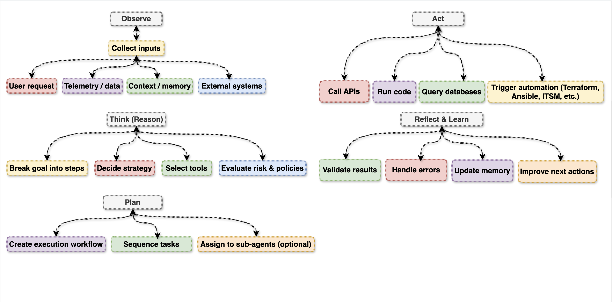
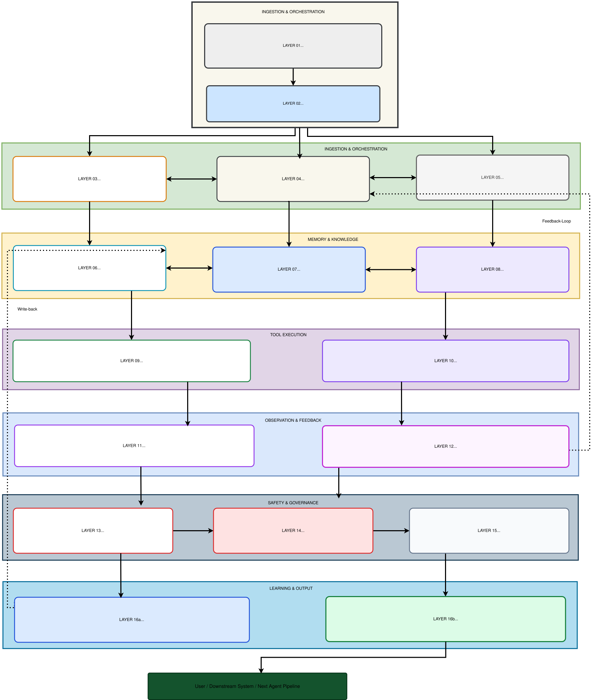

What is Agentic AI?¶
Agentic AI refers to AI systems that can act autonomously to pursue goals, make decisions, and complete multi-step tasks with minimal human intervention — rather than simply responding to single prompts.
Agentic AI is an AI paradigm where the system behaves like an autonomous agent that can:
Key characteristics:¶
- Goal-directed behavior — Given an objective, the AI breaks it down into subtasks and works toward completing them independently.
- Tool use — Agentic AI can use external tools like web search, code execution, APIs, file systems, or other software to accomplish tasks.
- Multi-step reasoning — It plans, executes, evaluates results, and adjusts its approach across multiple steps.
- Memory — It can retain context across a workflow to make coherent decisions over time.
- Autonomy — It can take actions in the world (send emails, browse the web, write and run code) rather than just generating text.

16 Layers of Agentic AI¶
Full-Stack Reference Architecture — From raw input to autonomous output
Group 01 · Ingestion & Orchestration¶
Layer 01 — Input Layer¶
Tag: Entry Point
Receives all incoming instructions — user prompts, API calls, scheduled triggers, webhooks, or messages from other agents. Parses and normalizes intent before passing it downstream.
Components: User Prompt · API Trigger · Webhook · Scheduler · Agent Message
Layer 02 — Orchestration Layer¶
Tag: Coordination
The central manager. Interprets goals, decomposes them into sub-tasks, assigns work to specialized agents, and manages overall workflow state and lifecycle across all layers.
Components: Task Routing · Sub-Agent Mgmt · Workflow DAG · Priority Queue
Group 02 · Cognition & Reasoning¶
Layer 03 — Planning Layer¶
Tag: Strategy
Converts high-level goals into ordered, executable plans. Handles task dependencies, estimates effort, and generates step-by-step blueprints that the Reasoner works through.
Components: Task Decomposition · Dependency Graph · ReAct / CoT · Plan Revision
Layer 04 — Reasoning Layer¶
Tag: Intelligence
The LLM core. Performs chain-of-thought reasoning, evaluates multiple options, reflects on intermediate outputs, and determines the single next best action to take at each step.
Components: LLM Inference · Chain-of-Thought · Self-Reflection · Hypothesis Testing
Layer 05 — Action Selection Layer¶
Tag: Decision
Translates reasoning outputs into concrete, executable commands. Selects the right tool, binds the correct parameters, and dispatches the call with a confidence score attached.
Components: Tool Selection · Parameter Binding · Action Ranking · Confidence Score
Group 03 · Memory & Knowledge¶
Layer 06 — Short-Term Memory¶
Tag: Context
Holds the live session context — current task state, conversation history, recent tool outputs, and intermediate reasoning. Lives within the LLM's active context window.
Components: Context Window · Session State · Scratchpad · Working Memory
Layer 07 — Long-Term Memory¶
Tag: Persistence
Persistent cross-session storage. Remembers user preferences, past decisions, historical outcomes, and behavioral patterns to improve future performance without re-learning from scratch.
Components: User Preferences · Past Decisions · Episodic Memory · Cross-Session
Layer 08 — Knowledge & RAG Layer¶
Tag: Retrieval
Retrieval-Augmented Generation pipeline and knowledge graphs. Semantically searches vector databases to inject relevant, up-to-date domain knowledge directly into the reasoning context.
Components: Vector DB · Semantic Search · Knowledge Graph · Embeddings · RAG Pipeline
Group 04 · Tool Execution¶
Layer 09 — Tool & API Layer¶
Tag: Integration
Manages all external integrations. Routes tool calls to correct endpoints — web search, databases, file systems, communication platforms, cloud infrastructure, and ITSM systems.
Components: Web Search · REST APIs · File System · Email / Slack · Cloud / K8s · ITSM
Layer 10 — Code Execution Layer¶
Tag: Runtime
A sandboxed environment for safely executing generated code. Runs Python, bash, SQL and other languages, capturing stdout, stderr, return values, and enforcing execution timeouts.
Components: Sandbox · Python / Bash · SQL Execution · Error Capture · Timeout Guard
Group 05 · Observation & Feedback¶
Layer 11 — Observation Layer¶
Tag: Perception
Collects and parses results from every tool execution. Normalizes varied output formats — JSON, HTML, plain text, error codes — into structured observations the Reasoning Layer can consume.
Components: Result Parsing · Output Normalization · Error Detection · State Update
Layer 12 — Feedback & Reflection Layer¶
Tag: Adaptation
Closes the cognitive loop. Evaluates whether each action achieved its intent, identifies failure root causes, and feeds corrective signals back to the Planning and Reasoning layers.
Components: Goal Evaluation · Self-Critique · Retry Logic · Loop Termination
Group 06 · Safety & Governance¶
Layer 13 — Guardrails Layer¶
Tag: Safety
Enforces behavioral policies and hard boundaries. Intercepts and blocks actions that violate defined rules — preventing unauthorized, irreversible, destructive, or out-of-scope operations.
Components: Policy Engine · Action Filtering · Scope Enforcement · Harm Prevention
Layer 14 — RBAC & Approvals Layer¶
Tag: Access Control
Role-based access control and human-in-the-loop checkpoints. Ensures the agent only accesses permitted resources and pauses for human approval before executing high-risk actions.
Components: RBAC · Human Approval · Permission Scopes · Escalation Flow
Layer 15 — Audit & Logging Layer¶
Tag: Compliance
Immutable record of every agent action, tool call, decision, and outcome. Supports compliance audits, debugging, post-mortems, and full accountability tracing across the entire pipeline.
Components: Immutable Logs · Trace IDs · Decision Records · Compliance Export
Group 07 · Learning & Output¶
Layer 16a — Learning Layer¶
Tag: Improvement
Captures outcomes, user feedback, and failure signals to continuously improve agent behavior. Updates prompt heuristics, refines tool selection, and writes learnings to long-term memory.
Components: RLHF Signals · Prompt Tuning · Outcome Tracking · Heuristic Update
Layer 16b — Output Layer¶
Tag: Delivery
Formats and delivers the final result to the user or downstream system — a report, code artifact, API response, Slack notification, or a trigger that kicks off another agent pipeline.
Components: Response Formatting · File / Report · API Response · Downstream Trigger · Human Handoff
Summary Table¶
| Layer | Name | Group | Key Role |
|---|---|---|---|
| 01 | Input Layer | Ingestion | Receives user/system instructions |
| 02 | Orchestration Layer | Ingestion | Routes tasks, manages workflow |
| 03 | Planning Layer | Cognition | Breaks goals into ordered steps |
| 04 | Reasoning Layer | Cognition | LLM-powered thinking & decisions |
| 05 | Action Selection | Cognition | Picks & dispatches tools |
| 06 | Short-Term Memory | Memory | Active session context |
| 07 | Long-Term Memory | Memory | Persistent cross-session storage |
| 08 | Knowledge & RAG | Memory | Vector search & knowledge graphs |
| 09 | Tool & API Layer | Execution | External integrations |
| 10 | Code Execution | Execution | Sandboxed code runtime |
| 11 | Observation Layer | Feedback | Parses tool results |
| 12 | Feedback & Reflection | Feedback | Closes the learning loop |
| 13 | Guardrails Layer | Safety | Enforces behavioral policies |
| 14 | RBAC & Approvals | Safety | Access control & human oversight |
| 15 | Audit & Logging | Safety | Immutable compliance records |
| 16a | Learning Layer | Output | Continuous improvement signals |
| 16b | Output Layer | Output | Delivers final results |
16 Layers of Agentic AI - Full-Stack Architecture Diagram¶

Mapping Agentic AI Patterns to LangGraph vs CrewAI¶
🧩 Pattern → Framework Mapping Table¶
| Pattern | LangGraph | CrewAI | Notes |
|---|---|---|---|
| Reactive Agent | ✅ Node | ✅ Agent | Simple Q&A |
| Tool-Using Agent | ✅ Tool Node | ✅ Tools | MCP fits both |
| ReAct | ✅ Native | ⚠️ Partial | LangGraph better control |
| RAG Agent | ✅ Native | ✅ Native | Both strong |
| Stateful Agent | ✅ Native State | ⚠️ Limited | LangGraph excels |
| Planner–Executor | ✅ Best Fit | ⚠️ Manual | LangGraph designed for this |
| Tree-of-Thought | ✅ Supported | ❌ Not native | Needs graph branching |
| Graph-of-Thought | ✅ Native | ❌ No | LangGraph exclusive |
| Manager–Worker | ✅ Supervisor Graph | ✅ Crew | Both strong |
| Specialist Swarm | ✅ Nodes | ✅ Agents | CrewAI very natural |
| Debate / Consensus | ✅ Graph | ✅ Crew | CrewAI simpler |
| Critic–Generator | ✅ Graph | ✅ Crew | Both good |
| Event-Driven Agents | ✅ Excellent | ❌ Limited | LangGraph preferred |
| Policy-Driven Flow | ✅ Native | ⚠️ External | LangGraph integrates governance |
| Human-in-the-Loop | ✅ Native | ⚠️ Manual | LangGraph safer |
| Auto-Remediation | ✅ Best | ⚠️ Risky | Needs guardrails |
| Registry & Discovery | ✅ Native | ⚠️ External | LangGraph aligns with A2A |
| Observability-First | ✅ Built-in | ❌ Limited | LangGraph enterprise ready |
Anti-Patterns to Avoid (CRITICAL) 🚨¶
❌ Agentic AI Anti-Patterns¶
| Anti-Pattern | Why It’s Dangerous |
|---|---|
| Single mega-agent | No control, no audit |
| No governance | Compliance failure |
| Unbounded autonomy | Production risk |
| No observability | Silent failures |
| Tool access without policy | Security breach |
| No fallback | Infinite loops |
| No versioning | Irreproducible behavior |
| Prompt-only logic | Fragile systems |
| No cost controls | Budget explosion |
| Direct prod execution | Catastrophic failures |
Agentic AI Patterns list¶
| # | Pattern Name | Category | Purpose | When Used |
|---|---|---|---|---|
| 1 | Chain-of-Thought (CoT) | Planning & Reasoning | Step-by-step reasoning | Complex analysis, RCA |
| 2 | Tree-of-Thoughts (ToT) | Planning & Reasoning | Explore multiple solution paths | High-uncertainty problems |
| 3 | Graph-of-Thoughts (GoT) | Planning & Reasoning | Reason over dependency graphs | Service dependency RCA |
| 4 | ReAct (Reason+Act) | Planning & Reasoning | Alternate thinking and tool use | Investigation workflows |
| 5 | Plan–Act–Reflect | Planning & Reasoning | Iterative improvement loop | Autonomous remediation |
| 6 | Reflexion | Planning & Reasoning | Self-critique and retry | Low-confidence outputs |
| 7 | Hypothesis Testing | Planning & Reasoning | Validate multiple root causes | Incident diagnosis |
| 8 | Goal Decomposition | Planning & Reasoning | Break into sub-tasks | Multi-step automation |
| 9 | Constraint-Aware Planning | Planning & Reasoning | Respect policy/cost/risk limits | Prod-safe automation |
| 10 | Orchestrator–Worker | Multi-Agent | Central planner with specialists | Enterprise workflows |
| 11 | Planner–Executor | Multi-Agent | Plan first, then execute | Deterministic flows |
| 12 | Critic–Generator | Multi-Agent | Validate generated outputs | Change safety checks |
| 13 | Debate Pattern | Multi-Agent | Competing solutions selection | High-risk decisions |
| 14 | Specialist Swarm | Multi-Agent | Domain agents collaborate | Network/DB/Cloud RCA |
| 15 | Hierarchical Agents | Multi-Agent | Manager → team → tools | Large-scale systems |
| 16 | Blackboard | Multi-Agent | Shared working memory | Cross-agent context |
| 17 | Peer-to-Peer Agents | Multi-Agent | Direct negotiation | Decentralized systems |
| 18 | Workflow Graph | Orchestration | Stateful branching workflows | LangGraph pipelines |
| 19 | Event-Driven Agents | Orchestration | Trigger on alerts/events | Monitoring, scaling |
| 20 | Saga Pattern | Orchestration | Multi-step with rollback | Patch, infra changes |
| 21 | Checkpoint & Resume | Orchestration | Persist state across failures | Long-running tasks |
| 22 | Human Approval Gate | Orchestration | Pause for human review | High-risk actions |
| 23 | Policy-Based Routing | Orchestration | Route by risk/complexity | Complexity router |
| 24 | Circuit Breaker | Orchestration | Stop runaway loops | Tool safety |
| 25 | Guardrails | Safety | Pre/post validation | All prod actions |
| 26 | Risk-Tiered Autonomy | Safety | Auto vs human control | SRE automation |
| 27 | Tool Permission Scoping | Safety | Limit tool access | Security control |
| 28 | Simulation/Dry Run | Safety | Test before execution | Infra changes |
| 29 | Confidence Thresholding | Safety | Execute above score | Auto-remediation |
| 30 | Kill Switch | Safety | Emergency stop | Unsafe behavior |
| 31 | RAG | Knowledge | Retrieve docs/runbooks | Known fixes |
| 32 | Knowledge Graph Reasoning | Knowledge | Dependency + blast radius | Impact analysis |
| 33 | Semantic Memory | Knowledge | Store past learnings | Repeated incidents |
| 34 | Episodic Memory | Knowledge | Store execution history | Auditing, learning |
| 35 | Tool Discovery | Knowledge | Dynamic tool lookup | Plugin ecosystems |
| 36 | Context Optimization | Knowledge | Load relevant context only | Token reduction |
| 37 | Toolformer | Tool Usage | LLM decides tool calls | Flexible workflows |
| 38 | Function Calling | Tool Usage | Structured API execution | Deterministic actions |
| 39 | Tool Chaining | Tool Usage | Multi-tool pipelines | Diagnostics → fix |
| 40 | Parallel Tool Execution | Tool Usage | Run tools concurrently | Faster RCA |
| 41 | Fallback Tool Strategy | Tool Usage | Alternate tool on failure | Resilience |
| 42 | Model Routing | Cost & Performance | Cheap vs powerful model | Cost optimization |
| 43 | Token Budgeting | Cost & Performance | Limit reasoning depth | FinOps control |
| 44 | Caching/Memoization | Cost & Performance | Reuse prior results | Repeated tasks |
| 45 | Batch Inference | Cost & Performance | Process tasks together | High-volume alerts |
| 46 | Early Exit | Cost & Performance | Stop when confident | Low-complexity cases |
| 47 | Selective Reasoning | Cost & Performance | Use ToT only if needed | Cost + latency |
| 48 | Agent Telemetry | Observability | Track decisions/tools | Performance monitoring |
| 49 | Traceable Reasoning Logs | Observability | Full audit trail | Compliance |
| 50 | Outcome-Based KPIs | Observability | Measure MTTR, success | Value tracking |
| 51 | Feedback Learning Loop | Observability | Improve from outcomes | Continuous tuning |
| 52 | Drift Detection | Observability | Detect performance decay | Model health |
| 53 | Multi-Tenant Isolation | Enterprise | Tenant-specific memory/policy | SaaS platforms |
| 54 | RBAC/ABAC Enforcement | Enterprise | Role-based access | Governance |
| 55 | Policy-as-Code | Enterprise | Centralized control | Compliance |
| 56 | Compliance Evidence Gen | Enterprise | Auto audit logs | Regulated env |
| 57 | FinOps Cost Tracking | Enterprise | Cost per task/agent | Budget control |
| 58 | Registry & Discovery | Enterprise | Catalog agents/tools | Platform scale |
| 59 | Reinforcement Learning Loop | Learning | Improve via feedback | Optimization |
| 60 | Runbook Mining | Learning | Convert manual → auto | SRE automation |
| 61 | Continuous Evaluation | Learning | Shadow → canary → prod | Safe rollout |
| 62 | Meta-Agent Optimization | Learning | Agents tuning agents | Platform efficiency |
| 63 | Working Memory | Memory | Session context | Active task state |
| 64 | Long-Term Vector Memory | Memory | Semantic retrieval | Knowledge reuse |
| 65 | Structured State Store | Memory | Workflow state | LangGraph state |
| 66 | Time-Weighted Memory | Memory | Recent > old context | Incident timelines |
| 67 | Complexity Router | SRE-Specific | Simple vs complex path | Cost control |
| 68 | Correlation Graph | SRE-Specific | Merge alerts | Noise reduction |
| 69 | Blast Radius Estimation | SRE-Specific | Impact scoring | Change safety |
| 70 | Autonomous Remediation Loop | SRE-Specific | Diagnose → fix → validate | Auto-healing |
| 71 | Safe Rollback | SRE-Specific | Revert failed actions | Change management |
| 72 | Versioned Agents | Lifecycle | Track behavior per version | Governance |
| 73 | Canary Agents | Lifecycle | Test on subset | Safe deployment |
| 74 | Blue-Green Agents | Lifecycle | Zero-downtime upgrades | Platform ops |
| 75 | Feature Flags for Autonomy | Lifecycle | Toggle automation level | Gradual rollout |
🧠 Agentic AI Enterprise Patterns — Single Master Table¶
| Pattern | 16-Layer Mapping | LLM vs Non-LLM | Primary Agent Role |
|---|---|---|---|
| Chain-of-Thought (CoT) | Agent Runtime | LLM Mandatory | Planner |
| Tree-of-Thought (ToT) | Agent Runtime | LLM Mandatory | Planner |
| ReAct (Reason+Act) | Runtime + Tools | Hybrid | Planner → Executor |
| Plan-Act | Orchestration (LangGraph) | Non-LLM | Orchestrator |
| Plan-Act-Reflect | Orchestrator + Reflection | Hybrid | Orchestrator + Reflection |
| Reflection / Self-Critique | Reflection Layer | LLM Mandatory | Reflection |
| Critic-Planner (Maker-Checker) | Governance | Hybrid | Validator |
| Reasoner-Planner-Executor | Control Plane | Hybrid | Orchestrator |
| World-Model State Tracking | State & Memory | Non-LLM | Orchestrator |
Multi-Agent Collaboration¶
| Pattern | 16-Layer Mapping | LLM vs Non-LLM | Primary Agent Role |
|---|---|---|---|
| Hierarchical Agents | Control Plane | Non-LLM | Orchestrator |
| Peer-to-Peer Agents | Agent Runtime | Hybrid | Planner |
| Role-Based Agents | Registry & Discovery | Non-LLM | Orchestrator |
| Debate / Consensus | Governance | LLM Mandatory | Validator |
| Swarm Parallel Agents | Runtime | Non-LLM | Executor |
| Agent Mesh (A2A Bus) | Integration Layer | Non-LLM | Orchestrator |
Orchestration & Control¶
| Pattern | 16-Layer Mapping | LLM vs Non-LLM | Primary Agent Role |
|---|---|---|---|
| Sequential Orchestration (DAG) | Control Plane | Non-LLM | Orchestrator |
| Parallel Orchestration | Control Plane | Non-LLM | Orchestrator |
| Dynamic Routing | Control Plane | Hybrid | Orchestrator |
| Handoff Pattern | Control Plane | Non-LLM | Orchestrator |
| Group Chat Orchestration | Runtime | LLM Mandatory | Planner |
| Event-Driven Agents | Input Layer | Non-LLM | Orchestrator |
| Workflow Graph (LangGraph) | Control Plane | Non-LLM | Orchestrator |
| Control-Plane-as-Tool | Tools Layer | Non-LLM | Executor |
Tooling & Action¶
| Pattern | 16-Layer Mapping | LLM vs Non-LLM | Primary Agent Role |
|---|---|---|---|
| Tool-Use Selection | Tools & Integration | Hybrid | Planner |
| Function Calling | LLM Abstraction | Hybrid | Planner |
| Skill Library | Registry | Non-LLM | Orchestrator |
| Runbook Automation | Execution Layer | Non-LLM | Executor |
| Capability Routing | Registry | Non-LLM | Orchestrator |
| Sandboxed Execution | Security Layer | Non-LLM | Executor |
Memory & Knowledge¶
| Pattern | 16-Layer Mapping | LLM vs Non-LLM | Primary Agent Role |
|---|---|---|---|
| Short-Term Memory | State Layer | Non-LLM | Orchestrator |
| Long-Term Memory | Memory DB | Non-LLM | Orchestrator |
| RAG Retrieval | Knowledge Layer | Hybrid | Planner |
| Episodic Memory | State Layer | Non-LLM | Reflection |
| Semantic Cache | FinOps Layer | Non-LLM | Orchestrator |
| Stateful Agent Checkpoints | Orchestrator | Non-LLM | Orchestrator |
Governance, Safety, HITL¶
| Pattern | 16-Layer Mapping | LLM vs Non-LLM | Primary Agent Role |
|---|---|---|---|
| Human-in-the-Loop (HITL) | HITL Layer | Non-LLM | Validator |
| Policy Guardrails (OPA/Cedar) | Policy Layer | Non-LLM | Validator |
| RBAC/ABAC for Agents | Security Layer | Non-LLM | Validator |
| Risk-Based Autonomy | Governance | Hybrid | Validator |
| Audit Trail | Audit Layer | Non-LLM | Orchestrator |
| Explainability (Evidence-First) | Governance | Hybrid | Reflection |
Observability & Evaluation¶
| Pattern | 16-Layer Mapping | LLM vs Non-LLM | Primary Agent Role |
|---|---|---|---|
| Telemetry-Driven Agents | Input Layer | Non-LLM | Orchestrator |
| Outcome-Based Evaluation (KPI) | Observability | Non-LLM | Reflection |
| Confidence Scoring | Reflection | Hybrid | Reflection |
| Canary Execution | Deployment | Non-LLM | Executor |
| Feedback Loop Learning | Learning Layer | Hybrid | Reflection |
| Digital Twin Simulation | Governance | Non-LLM | Validator |
Cost & Performance¶
| Pattern | 16-Layer Mapping | LLM vs Non-LLM | Primary Agent Role |
|---|---|---|---|
| Model Routing | LLM Abstraction | Non-LLM | Orchestrator |
| Adaptive Autonomy | Control Plane | Hybrid | Orchestrator |
| Batch Reasoning | Runtime | Non-LLM | Executor |
| Caching (Semantic/Output) | State Layer | Non-LLM | Orchestrator |
| Elastic Agent Scaling | Deployment | Non-LLM | Executor |
Lifecycle & Deployment¶
| Pattern | 16-Layer Mapping | LLM vs Non-LLM | Primary Agent Role |
|---|---|---|---|
| Agent Registry & Discovery | Registry Layer | Non-LLM | Orchestrator |
| Versioned Agents | Lifecycle Layer | Non-LLM | Orchestrator |
| Blue-Green Deployment | Deployment | Non-LLM | Executor |
| Shadow Mode Agents | Observability | Non-LLM | Reflection |
| Policy-as-Code | Governance | Non-LLM | Validator |
| Continuous Evaluation (CE) | MLOps | Hybrid | Reflection |
Communication & Transactions¶
| Pattern | 16-Layer Mapping | LLM vs Non-LLM | Primary Agent Role |
|---|---|---|---|
| Message Bus (Kafka/Pulsar) | Integration Layer | Non-LLM | Orchestrator |
| Contract-Based Messaging (A2A) | Integration | Non-LLM | Orchestrator |
| Event Sourcing | State Layer | Non-LLM | Orchestrator |
| Saga Pattern | Orchestrator | Non-LLM | Orchestrator |
✅ Single Master Table (Enterprise)¶
| Pattern | When to Use (Use Case) | Example (How to use) | Planner Agent | Executor Agent | Validator Agent | Reflection Agent |
|---|---|---|---|---|---|---|
| Chain-of-Thought (CoT) | RCA, risk reasoning, policy interpretation | Planner reasons through evidence (metrics/logs) to propose safest remediation | LLM Required | N/A | N/A | LLM Optional (quality review) |
| Tree-of-Thought (ToT) | Multiple remediation options | Generate 3–5 options (restart/scale/rollback), score and pick best | LLM Required | N/A | N/A | LLM Required (branch outcome review) |
| ReAct (Reason+Act) | Investigation requiring tools | Query Prometheus → logs → CMDB → decide action | LLM Required | Non-LLM (tool calls) | Non-LLM (policy gate) | LLM Required (did it work?) |
| Plan-Act | Approved runbooks, patch workflows | Orchestrator runs deterministic steps: drain→patch→verify | LLM Optional (plan draft) | Non-LLM Required | Non-LLM Required | Hybrid (Non-LLM KPI + LLM summary) |
| Plan-Act-Reflect | Continuous improvement automation | Execute fix → reflect → update future decision policy | LLM Required | Non-LLM Required | Non-LLM Required | LLM Required |
| Reflection / Self-Critique | Reduce hallucination, validate outputs | Reflection agent checks proposed action against evidence + constraints | LLM Optional | N/A | LLM Optional (critique) + Non-LLM policy | LLM Required |
| Critic-Planner (Maker-Checker) | High-risk actions (DB restart, prod rollback) | Planner proposes → validator rejects if outside window → propose alternate | LLM Required | Non-LLM (if approved) | Non-LLM Required + LLM Optional | LLM Required |
| Reasoner-Planner-Executor | Enterprise separation of duties | Planner decides “scale to 10” → executor calls K8s → orchestrator tracks state | LLM Required | Non-LLM Required | Non-LLM Required | LLM Required |
| World-Model / State Tracking | Long-running incidents, resumable flows | Maintain incident state + dependencies; resume after failure | LLM Optional (interpret) | Non-LLM Required (state updates) | Non-LLM | LLM Optional (drift insights) |
| Hierarchical Multi-Agent | SecOps/SRE/FinOps under one orchestrator | Orchestrator routes work to domain agents | LLM Optional (task decomposition) | Non-LLM | Non-LLM | LLM Optional |
| Peer-to-Peer Agents | Cross-domain collaboration | SRE shares latency findings with FinOps agent | LLM Required (reasoning exchange) | Non-LLM | Non-LLM | LLM Optional |
| Role-Based Agents | Clear ownership boundaries | Patch agent only patches; Scaling agent only scales | Non-LLM (routing/registry) | Non-LLM | Non-LLM Required (RBAC) | LLM Optional |
| Debate / Consensus | Critical decisions requiring high confidence | 2–3 planners debate; consensus agent chooses | LLM Required | N/A | LLM Required + Non-LLM policy | LLM Required |
| Swarm Parallelization | Fleet tasks at scale | Check 500 nodes patch status in parallel | Non-LLM | Non-LLM Required | Non-LLM | LLM Optional |
| Agent Mesh / A2A Messaging | Decoupled agent communication | Agents communicate via contracts on message bus | Non-LLM | Non-LLM Required | Non-LLM Required (schema) | LLM Optional |
| Sequential Orchestration (DAG) | Runbooks, controlled flows | LangGraph executes step-by-step with retries/rollback | Non-LLM | Non-LLM Required | Non-LLM Required | LLM Optional |
| Parallel Orchestration | Faster diagnosis/execution | Run checks for CPU/mem/disk/net concurrently | Non-LLM | Non-LLM Required | Non-LLM | LLM Optional |
| Dynamic Routing | Choose best agent/tool dynamically | Classify incident → route to Network vs App agent | Hybrid (LLM classify) | Non-LLM Required | Non-LLM Required | LLM Optional |
| Handoff / Escalation | Risk threshold exceeded | Auto-heal fails → escalate to human approval | LLM Optional (explain) | Non-LLM | Non-LLM Required (HITL gate) | LLM Required |
| Group Chat Orchestration | Complex reasoning tasks | Planner+Risk+Cost agents collaborate | LLM Required | N/A | LLM Optional + policy | LLM Required |
| Event-Driven Agents | Real-time ops automation | Kafka event “pod crash” triggers flow | Non-LLM | Non-LLM Required | Non-LLM Required | LLM Optional |
| Tool-Use Selection | Many possible tools/APIs | Choose between SSM / Terraform / K8s / ITSM | LLM Required | Non-LLM Required | Non-LLM Required | LLM Optional |
| Function Calling (Structured) | Deterministic tool invocation | LLM outputs JSON action contract for executor | LLM Required | Non-LLM Required | Non-LLM Required (schema) | LLM Optional |
| Skill Library | Standard reusable actions | “restart_service_v3”, “apply_patch_v2” skills | Non-LLM | Non-LLM Required | Non-LLM Required | LLM Optional |
| Runbook Automation | Approved self-heal actions | Restart service, clear queue, scale within blast radius | N/A | Non-LLM Required | Non-LLM Required | LLM Optional |
| Short-Term Memory | Maintain context per incident | Store current metrics/log pointers/session state | N/A | Non-LLM Required | N/A | LLM Optional |
| Long-Term Memory | Learn from past incidents | Store successful fixes/outcomes; retrieve later | Hybrid (LLM uses) | Non-LLM Required | Non-LLM | LLM Required |
| RAG Grounding | Need factual/policy grounding | Retrieve policy/runbook/CMDB docs → synthesize decision | LLM Required | Non-LLM (retrieval) | Non-LLM Required (policy) | LLM Optional |
| Episodic Memory | Outcome-based learning | “Restart fixed it” stored and ranked next time | Hybrid | Non-LLM Required | N/A | LLM Required |
| Semantic / Output Cache | Reduce cost/latency | Cache repeated classifications and answers | N/A | Non-LLM Required | N/A | LLM Optional |
| Human-in-the-Loop (HITL) | High blast radius changes | Require approval for DB restart / prod rollback | LLM Optional (explain) | N/A | Non-LLM Required (approval) | LLM Required |
| Policy Guardrails (OPA/Cedar) | Enforce compliance and safety | Block action outside window/without ticket | N/A | N/A | Non-LLM Required | LLM Optional |
| RBAC/ABAC | Least privilege | Patch agent cannot modify IAM; FinOps cannot restart prod | N/A | N/A | Non-LLM Required | N/A |
| Risk-Based Autonomy | Auto vs manual by risk score | Low risk auto-heal; high risk HITL | Hybrid (LLM risk) | Non-LLM Required | Non-LLM Required | LLM Required |
| Audit Trail | SOC2/ISO evidence | Immutable log of decisions/actions/timestamps | N/A | Non-LLM Required | Non-LLM Required | LLM Optional (summaries) |
| Explainability (Evidence-First) | Trust & governance | Output: evidence → policy → action → expected impact | LLM Required | N/A | Non-LLM (check) | LLM Required |
| Outcome-Based Evaluation (KPI) | Measure MTTR/availability value | Compare before/after MTTR; autonomous resolution ratio | N/A | Non-LLM Required | Non-LLM | LLM Required (insights) |
| Confidence Scoring | Auto-escalation control | Low confidence → escalate to human | Hybrid | N/A | Non-LLM Required (threshold) | LLM Required (calibrate) |
| Canary Execution | Safe changes | Patch 5% nodes → validate → expand rollout | N/A | Non-LLM Required | Non-LLM Required | LLM Optional |
| Digital Twin / Simulation | Predict impact before action | Simulate scale-in effect on latency before doing it | LLM Optional | Non-LLM Required | Non-LLM Required | LLM Optional |
| Model Routing | Reduce LLM cost | Small model classify; large model plan only when needed | Non-LLM Required | N/A | Non-LLM | LLM Optional |
| Adaptive Autonomy | Save cost on simple cases | Simple alert → single-step plan; complex → ToT | Hybrid | Non-LLM Required | Non-LLM Required | LLM Required |
| Batch Reasoning | High volume similar alerts | Group 100 similar alerts → one diagnosis plan | Hybrid | Non-LLM Required | Non-LLM | LLM Optional |
| Elastic Agent Scaling | Scale platform runtime | Scale executor pods based on queue depth | N/A | Non-LLM Required | Non-LLM | LLM Optional |
| Registry & Discovery | Enterprise catalog | Find correct agent/skill/tool by metadata | N/A | Non-LLM Required | Non-LLM Required | LLM Optional |
| Versioned Agents | Change control | Deploy v2 agent with rollback | N/A | Non-LLM Required | Non-LLM Required | LLM Optional |
| Blue-Green Deployment | Safe upgrades | Switch traffic from v1 agent to v2 | N/A | Non-LLM Required | Non-LLM Required | LLM Optional |
| Shadow Mode | Validate before autonomy | Run AI decisions in parallel; no execution | LLM Required | N/A | Non-LLM Required | LLM Required |
| Policy-as-Code | GitOps governance | PR to change autonomy thresholds | N/A | N/A | Non-LLM Required | N/A |
| Continuous Evaluation | Regression tests for agents | Replay incident dataset; score accuracy | LLM Optional | Non-LLM Required | Non-LLM Required | LLM Required |
| Message Bus | Event backbone | Alerts and agent messages through Kafka topics | N/A | Non-LLM Required | Non-LLM Required | LLM Optional |
| Contract Messaging | Typed A2A communication | JSON schema enforced between agents | N/A | Non-LLM Required | Non-LLM Required | LLM Optional |
| Event Sourcing | Replayability | Re-run incident flow for audits | N/A | Non-LLM Required | Non-LLM | LLM Optional |
| Saga Pattern | Multi-step rollback safety | Patch fails → rollback → restore traffic | LLM Optional (plan) | Non-LLM Required | Non-LLM Required | LLM Optional |
📌 Usage Frequency Table¶
| Pattern | Frequency | Primary Role | Used For | When to Use | Production Priority |
|---|---|---|---|---|---|
| ReAct | ⭐⭐⭐⭐⭐ | Executor loop | Tool calling, step execution | Any tool-using agent | 🔥 Critical |
| Tool Use | ⭐⭐⭐⭐⭐ | Action layer | APIs, DB, Cloud, K8s, ITSM | Always when actions required | 🔥 Critical |
| Memory Management | ⭐⭐⭐⭐⭐ | Context layer | Past runs, KB, personalization | Learning agents, RCA history | 🔥 Critical |
| RAG | ⭐⭐⭐⭐⭐ | Knowledge layer | Runbooks, policies, docs | Grounded answers needed | 🔥 Critical |
| Planning | ⭐⭐⭐⭐ | Planner agent | Task decomposition, workflows | Multi-step tasks, RCA | High |
| Reflection | ⭐⭐⭐⭐ | Self-improvement | Retry, error correction | Quality improvement loops | High |
| Multi-Agent | ⭐⭐⭐⭐ | System architecture | Role separation, parallelism | Enterprise workflows | High |
| Router | ⭐⭐⭐⭐ | Traffic controller | Intent → tool/agent mapping | Multi-domain systems | High |
| Evaluator–Optimizer | ⭐⭐⭐ | Quality control | Scoring, grading, tuning | Content quality, compliance | Medium |
| Guardrails | ⭐⭐⭐⭐⭐ | Governance layer | RBAC, budget, safety | Always in production | 🔥 Critical |